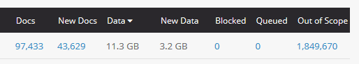

<!doctype html>
<html lang="en">
    <head>
        <meta charset="utf-8">
        <title>reveal-md</title>
        <link rel="stylesheet" href="css/reveal.css">
        <link rel="stylesheet" href="css/theme/black.css" id="theme">
        <!-- For syntax highlighting -->
        <link rel="stylesheet" href="lib/css/zenburn.css">

        <!-- If the query includes 'print-pdf', use the PDF print sheet -->
        <script>
          document.write( '<link rel="stylesheet" href="css/print/' + ( window.location.search.match( /print-pdf/gi ) ? 'pdf' : 'paper' ) + '.css" type="text/css" media="print">' );
        </script>
    </head>
    <body>

        <div class="reveal">
            <div class="slides"><section  data-markdown><script type="text/template">
<style>
#fLeft {float: left; max-width: 60%; text-align: left;}
#fRight {float: right; max-width: 40%; text-align: left;}
#fRight img {margin: 20px;}
#smallLink {font-size: 18px;}
.whitebg {background-color: #fff; margin-top: 30% !important; padding: 15px !important; border-radius: 15px;}
.altText {background-color: #fff; bottom: 30px; position: fixed; padding: 15px !important; border-radius: 5px;}
section {height:100%;}
.pullDown {height:auto;}
.reveal h1, h2, h3, h4, h5 {text-transform: none !important;}
</style>

## When Web Crawling Backfires?
<br/>
##### Gregory Wiedeman
##### University Archivist
##### University at Albany, SUNY
#####  @GregWiedeman
</script></section><section  data-markdown><script type="text/template">
### Web Archives at UAlbany

* Archive-It partner
* Crawling albany.edu since 2013
* NY State Politics since 2016
    * Extension of physical collecting
* Some Experimenting
* No known active use<!-- .element: class="fragment" data-fragment-index="1" -->
</script></section><section  data-markdown><script type="text/template">
### Web Archives at UAlbany

* We have and want to build collections on NY State politics and public policy
* Rockefeller College of Public Affairs & Policy
* No real existing relationship
* Faculty member who researches right-wing extremist networks on the web
    * wget --recursive and TBs of raw html
    * Trouble with some sites
</script></section><section  data-markdown><script type="text/template">
### Appraising a Racist Website

* Purposely document conflicting views
    * Conservative Party of NYS
    * Ernest Van Den Haag
* Emphasizing with at-risk groups
* Is conservatism underdocumented?
    * Maybe in quantity, but not in research value
    * Content-wise this is garbage
* SPLC already adding to Wayback
* Can directly aid research

</script></section><section  data-markdown><script type="text/template">
### Crawling a Racist Website

* Recursively appending garbage to URLs?
* Millions of docs
* Bad wordpress plugins?
* obfuscation or incompetence?


</script></section><section  data-markdown><script type="text/template">
<pre><code>
"/mejs." 
"/ADSENSE/" 
"/groups/" 
"/friends/" 
"/favorites/" 
"/mentions/" 
"/notifications/" 
"/messages/" 
"/settings/" 
"/Captions/" 
"/js/index.php" 
"/audio/" 
"/video/" 
"/profile/" 
"/eventEmitter/" 
"/get-style-property/" 
"/doc-ready/" 
"/matches-selector/" 
"/fizzy-ui-utils/" 
"/outlayer/" 
"/isotope/" 
"/masonry/" 
"/layout-modes/" 
"?mode=list" 
"?mode=grid" 
"/wp/v2/" 
"/circle.background"
</code></pre>
</script></section><section  data-markdown><script type="text/template">
### Things to think about

* Do they sell ads? Am I funding them?
    * Turn off add blocker
    * Is scopeing them effective?
* Why is it appending numbers as params?
<br/>
link/to/image.jpg?pas=20312538471902072133
</script></section><section  data-markdown><script type="text/template">
### Breaking things

* Crawls didn't get user activity pages
* Tried to crawl just that section
* Suddenly required login for major parts of site<!-- .element: class="fragment" data-fragment-index="1" -->
    * is that good?<!-- .element: class="fragment" data-fragment-index="2" -->
    </br>
* "I might have made your research data impossible to get, but here's a WARC you don't know how to use."<!-- .element: class="fragment" data-fragment-index="3" -->
</script></section><section  data-markdown><script type="text/template">
### Web Archives and Oppositional Collecting

* I think there are underdocumented things
    * How racist or other ideas affect political power?
    * Are these records on the public web?
* Web Archives are extremely limited for this type of collecting
* Broader questions about collecting and power
    
</script></section><section  data-markdown><script type="text/template">
### When Web Crawling Backfires?
<br/>

##### Gregory Wiedeman
##### University Archivist
##### University at Albany, SUNY
#####  @GregWiedeman
</script></section></div>
        </div>

        <script src="lib/js/head.min.js"></script>
        <script src="js/reveal.js"></script>

        <script>
            function extend() {
              var target = {};
              for (var i = 0; i < arguments.length; i++) {
                var source = arguments[i];
                for (var key in source) {
                  if (source.hasOwnProperty(key)) {
                    target[key] = source[key];
                  }
                }
              }
              return target;
            }

            // Optional libraries used to extend on reveal.js
            var deps = [
              { src: 'lib/js/classList.js', condition: function() { return !document.body.classList; } },
              { src: 'plugin/markdown/marked.js', condition: function() { return !!document.querySelector('[data-markdown]'); } },
              { src: 'plugin/markdown/markdown.js', condition: function() { return !!document.querySelector('[data-markdown]'); } },
              { src: 'plugin/highlight/highlight.js', async: true, callback: function() { hljs.initHighlightingOnLoad(); } },
              { src: 'plugin/notes/notes.js', async: true, condition: function() { return !!document.body.classList; } },
              { src: 'plugin/math/math.js', async: true }
            ];

            // default options to init reveal.js
            var defaultOptions = {
              controls: true,
              progress: true,
              history: true,
              center: true,
              transition: 'default',
              dependencies: deps
            };

            // options from URL query string
            var queryOptions = Reveal.getQueryHash() || {};

            var options = {
  "transition": "fade"
};
            options = extend(defaultOptions, options, queryOptions);
            Reveal.initialize(options);
        </script>
        
          <script src="/scripts/slides"></script>
    </body>
</html>
